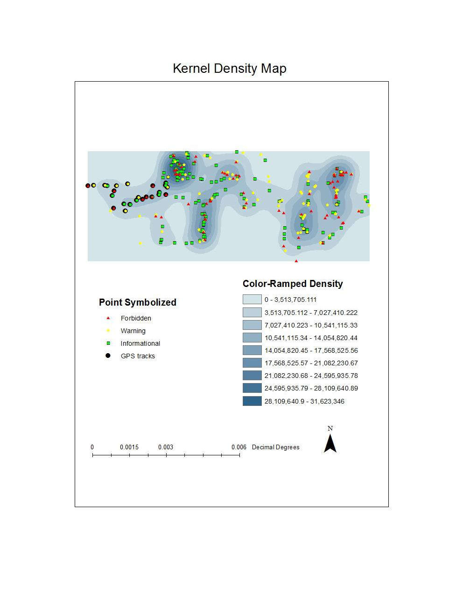
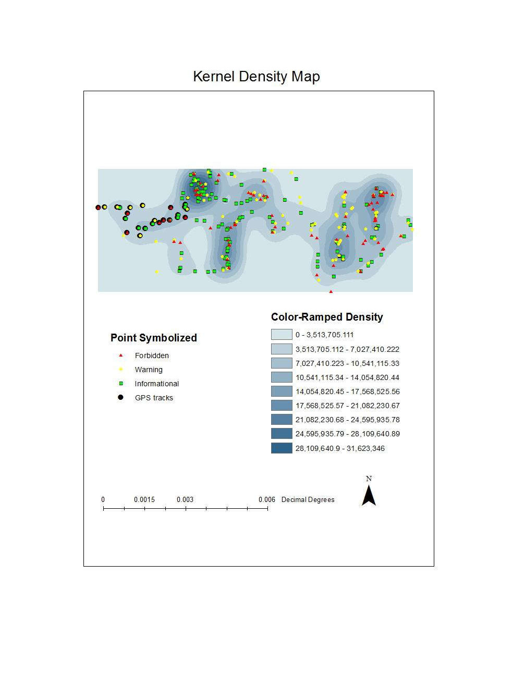

- Team leader in a senior project by utilizing ArcGis and Excel to analyze the kelp density in the Santa Barbara Channel
- Used R-squared analysis to show correlations between kelp density and variables such as temperature and wave events.
- Created kernel density map of the kelp biomass
<-- Move cursor to magnify
Abel to calcuate distance weight
- Created a map
- it took this
Created Kernel Density and Proximity Map for different types of signs in UCSB school campus
1984
1997
2010
Change from 1984 to 1997
Created 3D model of satellite image using elevation data
 
